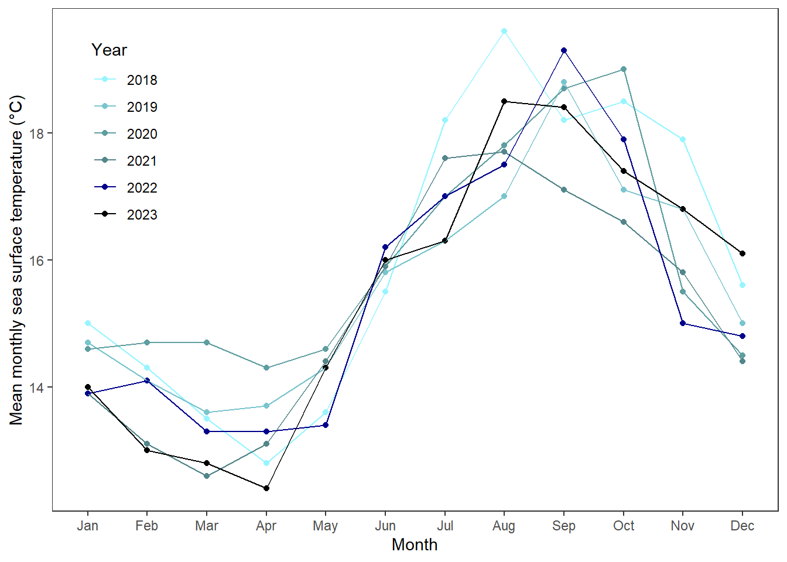
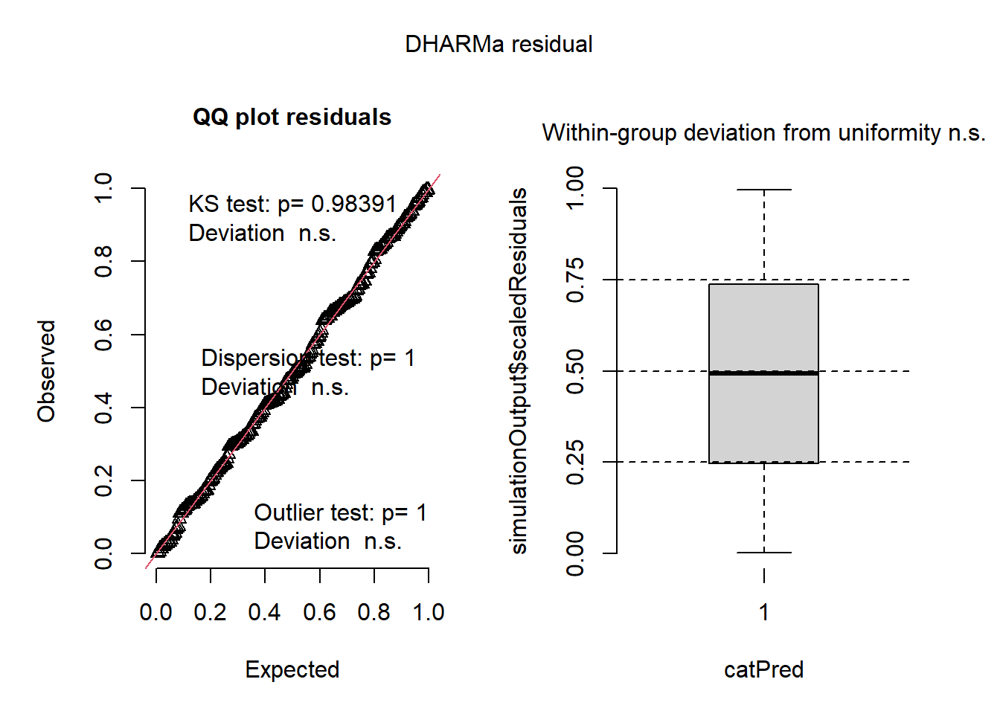
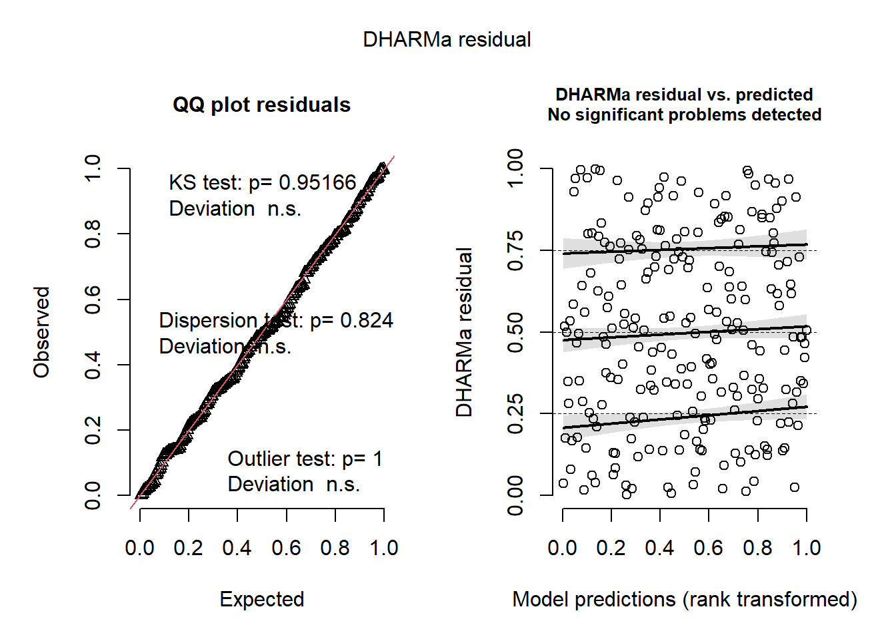
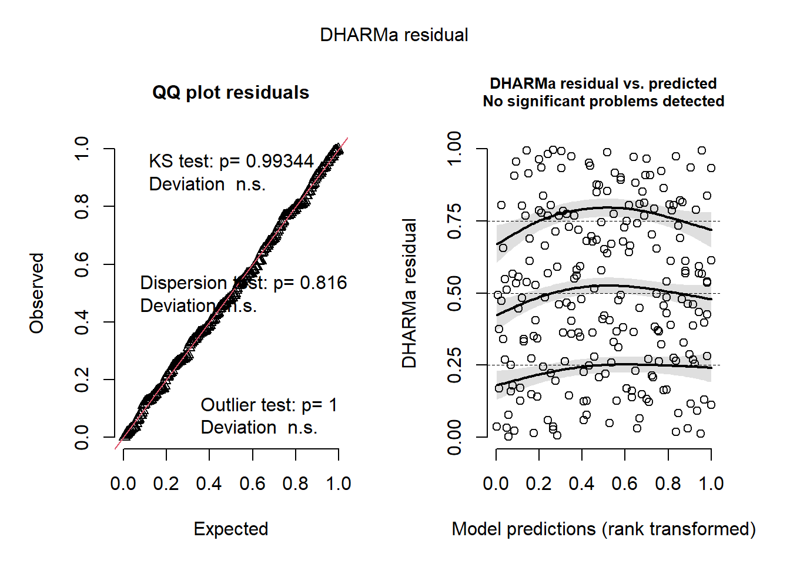
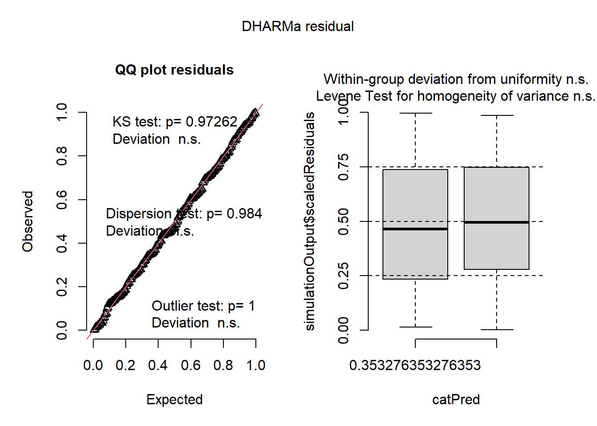
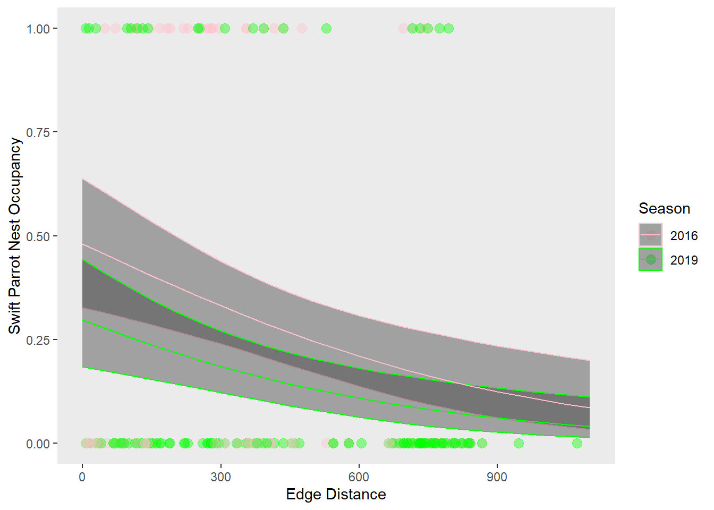

library(tidyverse) # loading packages
library(janitor)
library(here)
library(ggeffects)
library(MuMIn)
library(DHARMa)
sst <- read_csv(
here("data", "SST_update2023.csv")) # reading in the datafinal
Github repo: https://github.com/kathrynk04/ENVS-193DS_spring-2025_final.git
Problem 1: Research writing
a. Transparent statistical methods
In part 1, they used Pearson’s r. In part 2, they used a one-way ANOVA.
b. More information needed
Another test that should be included is Tukey’s HSD in order to determine which source group means are different from each other. A piece of additional information that should be included is the effect size, which is the eta squared, to determine how large of an effect the source had on average nitrogen load.
c. Suggestions for rewriting
We found a relationship (Pearson’s r = correlation coefficient) between distance from headwater and annual total nitrogen load, where distance from headwater significantly predicted annual total nitrogen load (F(degrees of freedom, 1) = F-statistic, p = 0.03, \(\alpha\) = significance level). We found a difference between sources in average nitrogen load (one-way ANOvA, F(4, within groups df) = F-statistic, p = 0.02, \(\alpha\) = significance level).
Problem 2: Data visualization
a. Cleaning and summarizing
sst_clean <- sst |> # storing the data into a new cleaned data frame
clean_names() |> # cleaning the names
mutate(year = year(date), # extracting the year from the date column
month = month(date)) |> # extracting the month from the date column
filter(year > 2017) |> # filtering to only include years since 2018
mutate(month = case_match(as.character(month), # changing the month numbers to abbreviations
"1" ~ "Jan",
"2" ~ "Feb",
"3" ~ "Mar",
"4" ~ "Apr",
"5" ~ "May",
"6" ~ "Jun",
"7" ~ "Jul",
"8" ~ "Aug",
"9" ~ "Sep",
"10" ~ "Oct",
"11" ~ "Nov",
"12" ~ "Dec"),
month = factor(month, # making month an ordered factor and selecting the levels
levels = c("Jan",
"Feb",
"Mar",
"Apr",
"May",
"Jun",
"Jul",
"Aug",
"Sep",
"Oct",
"Nov",
"Dec"),
ordered = TRUE),
year = factor(as.character(year), # making year a factor and selecting the levels
levels = as.character(2018:2023),
ordered = FALSE)) |>
group_by(year, month) |> # grouping by year and month
summarize(mean_monthly_sst = mean(temp), # calculating the mean monthly sst for each month in each year
.groups = "drop") |>
mutate(mean_monthly_sst = round(mean_monthly_sst, 1)) # rounding mean monthly ssts to 1 decimal place
print(str(sst_clean)) # displaying the structure of sst_cleantibble [72 × 3] (S3: tbl_df/tbl/data.frame)
$ year : Factor w/ 6 levels "2018","2019",..: 1 1 1 1 1 1 1 1 1 1 ...
$ month : Ord.factor w/ 12 levels "Jan"<"Feb"<"Mar"<..: 1 2 3 4 5 6 7 8 9 10 ...
$ mean_monthly_sst: num [1:72] 15 14.3 13.5 12.8 13.6 15.5 18.2 19.6 18.2 18.5 ...
NULLprint(slice_sample(sst_clean, n = 5)) # displaying 5 rows from sst_clean# A tibble: 5 × 3
year month mean_monthly_sst
<fct> <ord> <dbl>
1 2019 Oct 17.1
2 2020 Jul 17
3 2018 Aug 19.6
4 2023 Oct 17.4
5 2019 Jun 15.8b. Visualize the data
ggplot(data = sst_clean, # making the data frame from sst_clean
aes(x = month, # setting month as x-axis
y = mean_monthly_sst, # setting mean_monthly_sst as y-axis
color = year, # coloring by year
group = year)) + # grouping by year
geom_point() + # adding points onto plot
geom_line() + # adding lines onto plot
scale_color_manual(values = c("2018" = "cadetblue1", # assigning different colors to each year
"2019" = "cadetblue3",
"2020" = "cadetblue",
"2021" = "cadetblue4",
"2022" = "darkblue",
"2023" = "black")) +
labs(x = "Month", # labeling the x-axis
y = "Mean monthly sea surface temperature (°C)") + # labeling the y-axis
theme_bw() + # making the theme black and white
theme(panel.grid = element_blank(), # removing panel grid
legend.position = "inside", legend.position.inside = c(.1, 0.75)) + # putting the legend in the top left corner inside panel
guides(color = guide_legend("Year")) # changing the legend name
Problem 3: Data analysis
nest_boxes <- read_csv(here("data", "occdist.csv")) # reading in the dataa. Response variable
In this dataset, a 1 indicates the presence of one of the three bird species, Common Starling, Swift Parrot, or Tree Martin, in a nest, and a 0 indicates that species isn’t present. However, if the 1 is under the column labeled “e”, then that means the nest was empty, and if there’s a 0 in one of those columns, that means the nest wasn’t empty.
b. Purpose of study
The main difference between Swift Parrots and the other two species in the study is that the nests used in the study were intended to be used by Swift Parrots, because they’re critically endangered. So, this study was able to determine how nest box distance from the forest edge and year impacted which species nested, therefore helping inform management in order to place nests in places that attract the target species.
c. Difference in “seasons”
The seasons are the summer in 2016 and 2019, and the difference between these seasons was that the nests were considered new in 2016 and established in 2019.
d. Table of models
4 models total:
| Model number | Season | Edge Distance | Predictor list |
|---|---|---|---|
| 0 | no predictors (null model) | ||
| 1 | X | X | all predictors (full model) |
| 2 | X | edge distance | |
| 3 | X | season |
e. Run the models
model0 <- glm(sp ~ 1, # creating null model
data = nest_boxes_clean,
family = "binomial")
model1 <- glm(sp ~ edge_distance + season, # creating full model (edge distance and season)
data = nest_boxes_clean,
family = "binomial"
)
model2 <- glm(sp ~ edge_distance, # creating model with edge distance as predictor
data = nest_boxes_clean,
family = "binomial"
)
model3 <- glm(sp ~ season, # creating model with season as predictor
data = nest_boxes_clean,
family = "binomial"
)f. Check the diagnostics
par(mfrow = c(2, 2))
plot(simulateResiduals(model0)) # checking diagnostics for model0
plot(simulateResiduals(model1)) # checking diagnostics for model1
plot(simulateResiduals(model2)) # checking diagnostics for model2Warning in newton(lsp = lsp, X = G$X, y = G$y, Eb = G$Eb, UrS = G$UrS, L = G$L,
: Fitting terminated with step failure - check results carefully
plot(simulateResiduals(model3)) # checking diagnostics for model3
g. Select the best model
AICc(model1, # using Akaike's Information Criterion to determine which model is best
model2,
model3,
model0) |>
arrange(AICc) # arranging in order of lowest AICc value df AICc
model1 3 226.3133
model2 2 229.6716
model3 2 236.3744
model0 1 238.8318The best model as determined by Akaike’s Information Criterion (AIC) that predicts the presence of Swift Parrots includes edge distance and season.
h. Visualize the model predictions
mod_preds <- ggpredict(model1, # creating the model predictions data set and naming the mmodel
terms = c("edge_distance", "season")) |> # naming the predictors`
rename(edge_distance = x, # renaming x column as "edge_distance"
season = group) # renaming group column as "season"
ggplot(data = nest_boxes_clean, # setting up the data frame
aes(x = edge_distance, # putting edge distance on x-axis
y = sp, # putting swift parrot presence on y-axis
group = season, # grouping by season
color = as_factor(season))) + # coloring by season and making season a factor
labs(x = "Edge Distance", # changing the x-axis label
y = "Swift Parrot Nest Occupancy") + # changing the y-axis label
geom_point(size = 3, # dispaying nest_boxes_clean data points
alpha = 0.4) +
geom_ribbon(data = mod_preds, # displaying the 95% CI for the model predictions
aes(x = edge_distance, # putting edge_distance on x-axis
y = predicted, # putting swift parrot presence prediction on y-axis
ymin = conf.low, # displaying the upper and lower bounds of the 95% CI
ymax = conf.high),
alpha = 0.4) +
geom_line(data = mod_preds, # displaying a line plot for model prediction
aes(x = edge_distance, # putting edge distance on x-axis
y = predicted)) + # putting swift parrot presence prediction on y-axis
scale_color_manual(values = c("2016" = "pink", # coloring 2016 data pink
"2019" = "green")) + # coloring 2019 data green
theme(panel.grid = element_blank()) + # getting rid of panel grid
guides(color = guide_legend("Season")) # renaming the legend "Season"
i. Write a caption for your figure
Figure 1: Model predictions and 95% confidence interval for probability of swift parrot nest occupancy according to distance from forest edge and season. Probability of swift parrot nest occupancy decreases with distance from forest edge, and probability is higher in 2016, when the nest was new, than in 2019, when the nest was established. 2016 is colored in pink and 2019 is colored in green. 95% confidence interval for both season predictions is represented by ribbons, with the 2016 ribbon colored pink and the 2019 ribbon colored green.
Data citation: Stojanovic D, Owens G, Young CM, Alves F, Heinsohn R. 2020. Do nest boxes breed the target species or its competitors? A case study of a critically endangered bird. Restoration Ecology. 29(3). doi:https://doi.org/10.1111/rec.13319.
j. Calculate model predictions
ggpredict(model1, # predicting swift parrot nest occupancy from model1
terms = c("edge_distance [0]", "season")) # setting edge distance as 0 and creating a prediction for each season# Predicted probabilities of sp
season: 2016
edge_distance | Predicted | 95% CI
--------------------------------------
0 | 0.48 | 0.33, 0.64
season: 2019
edge_distance | Predicted | 95% CI
--------------------------------------
0 | 0.30 | 0.18, 0.44ggpredict(model1, # predicting swift parrot nest occupancy from model1
terms = c("edge_distance [900]", "season")) # setting edge distance as 100 and creating a prediction for each season# Predicted probabilities of sp
season: 2016
edge_distance | Predicted | 95% CI
--------------------------------------
900 | 0.12 | 0.06, 0.24
season: 2019
edge_distance | Predicted | 95% CI
--------------------------------------
900 | 0.06 | 0.03, 0.13k. Interpret your results
The predicted probability of swift parrot nest occupancy at the forest edge (0m) is 48% for 2016 and 30% for 2019. The predicted probability of swift parrot nest occupancy farther from the forest edge (900m) is 12% for 2016 and 6% for 2019. The negative slope of the model predictions in figure 1 indicate that distance from forest edge increases, probability of swift parrot nest occupancy decreases. The relationship between distance from forest edge and probability of swift parrot nest box occupancy can be explained by the fact that one of their nest competitors, tree martins, are a native species that often takes up nest boxes that are intended for swift parrots. But, tree martins prefer to occupy nests closer to forest edges, and this competition is what drives swift parrots to select nests further from the forest edge.
Problem 4: Affective and exploratory eisualizations
a. Comparing visualizations
My visualizations are different from each other in the way that I’ve represented my data because my exploratory visualization compares in the form of boxplots the average amount of time I spent studying when I consumed coffee either while studying or not at all, while my affective visualization shows how much time I spent studying each day and how much caffeine I consumed. In my exploratory visualization, you can’t tell how much caffeine I consumed each day that I studied, whereas you can tell by the size of the coffee stain in my affective visualization. Additionally, you can’t tell when I consumed caffeine relative to studying in my affective visualization, but you can based on the x-axis label under each boxplot in my exploratory visualization.
My visualizations are all similar because they show how much time I spent studying each day, but that’s the only thing they all have in common.
In my exploratory visualization, you can see that I spent more average time studying whenever I consumed caffeine, but it’s much harder, or impossible, to see this distinction in my affective visualization. This is due to the fact that my affective visualization doesn’t display the average time spent studying when I consumed caffeine and when I didn’t, so it’s much harder to compare based on the size of the papers and coffee stains in my affective visualization alone.
I got feedback from one of my peers to darken the shading of the coffee stains in my affective visualization, which I did end up doing and only hadn’t done yet because my draft was traced in pen instead of pencil and I didn’t want to cover the pencil lines, and she also suggested I include an explanation for the size of the pages, which I was able to explain in my artist statement. My instructor suggested defining the proportion of caffeine, which I was also able to define as the proportion of caffeine consumed each day in my artist statement, and that I draw zig-zags instead of straight lines on my paper. However, I wasn’t able to do this because on some of the sample days I studied for over 300 or 400 minutes, so it would’ve taken me a really long time to measure out every centimeter of the zig-zags until I reached over 300 centimeters for multiple days, although I do agree it would’ve looked cool.